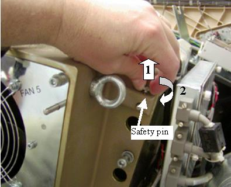
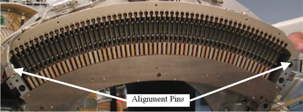

Operating Documentation
Direction 5307452-8EN, Rev# 4
Discovery CT750 HD Service Methods - Adv
Operating Documentation |
| Required Persons | Preliminary Reqs | Procedure | Finalization |
|---|---|---|---|
| 1 | NA | 30 mins | NA |
This procedure defines the necessary steps to Remove and Install the Detector Air Plenum Assembly.
| Last Revised: | January 18, 2008 |
| Item | Qty | Effectivity | Part# | Manufacturer | |
|---|---|---|---|---|---|
| Hex wrenches | (Field Supplied) | - | - | - | |
| Item | Qty | Effectivity | Part# | Manufacturer |
|---|---|---|---|---|
| Tywraps | AR | - | - | - |
| ESD Hazard with the air plenum removed since the Detector FRM cards are exposed. Use proper ESD grounding when working in this area. | |
| CRUSH HAZARD. | |
| UNEXPECTED GANTRY ROTATION CAN CAUSE SERIOUS INJURY. | |
| Never service the gantry with the axial drive enabled. Use the gantry rotation lock to lock out gantry rotation. See safety menu of Service Document gui for appropriate procedures. |
Remove right side gantry cover.
Refer to Parts Replacement → Gantry → Enclosure → (Cover Removal Procedure).
Disable Axial Drive and HVDC on the service switch panel.
Position the Detector at 12 o'clock and lock gantry rotation.
Turn off the 120 VAC service switch from the service switch panel.
Remove the gantry front cover.
Disconnect the 48V Power supply output cable to be able to move the cable bundle out of the way for easier plenum removal. See Illustration 1.
| NOTE: | With the 2006 Style plenum, the 48V cable routing allows easy plenum removal without needing to remove the 48V cable. Only remove cable if you think it is necessary. |
Illustration 1: 48V Power Supply Cable

If another person is available to help, skip the next step (removing fan plate) and just remove the plenum with fan plate in place.
Remove the fan plate as follows:
Remove the cable safety covers.
Disconnect the cabling to the fan plate.
Loosen the 12 captive screws holding the fan plate to the Air plenum and remove the fan plate.
Illustration 2: Plenum with cable covers

From the CFC (Fan controller on the left of the plenum) disconnect cabling on the front coming from the detector.
From the DHC (Heater Controller on the right of the plenum) disconnect cabling on the front coming from the detector.
The plenum is attached to the detector by captive screws around the edge. Loosen the 8 captive plenum screws, 2 bottom, 3 top, 1 on each side.
Pull up on safety pin small knob and rotate ¼ turn to keep the safety pin disengaged. (on both sides of plenum) See Illustration 3.
You may need to pull the pin up and shift plenum forward slightly if pin does not release properly. Plenum is held in place by the two safety pins when all screws are released.
Newer version plenums will have this pin on the side.
Illustration 3: Plenum Safety Pin

If the fan plate was removed, use the Ribs as handles to lift plenum off detector. If the fan plate was left on, can use the eyebolts to hold the plenum during removal. Be careful around thermistors. Lift plenum straight away from the gantry to avoid bending the plenum alignment pins on either side of plenum. (see Illustration 4)
The filter assembly is attached to the rear of the plenum. The back side of the filter is an EMC screen that can be damaged if poked or hit blocking air flow. Make sure the plenum is set on a flat clean surface and not on top of any small objects that can poke the EMC screen.
Illustration 4: Air Plenum

Perform the work for which the plenum was removed.
Install the air plenum housing being careful not to hit the EMC mesh on the backside of the plenum during installation. Plenum alignment pins on either end of detector casting can poke holes in the EMC mesh. (see Illustration 5) Make sure no cabling is caught between the detector casting and the air plenum.
Illustration 5: Alignment pins for plenum

Torque plenum top and side M8 screws to the value shown in Table 1.
Table 1: Plenum top and side M8 screw torque
| 19.2 N-m | 14.2 lb-ft | 170 lb-in | 196 Kg-cm |
Torque plenum bottom M6 screws (into light seal plate) to the value shown in Table 2.
Table 2: Plenum bottom M6 screw torque
| 8 N-m | 6 lb-ft | 71 lb-in | 82 Kg-cm |
Install the fan plate if removed and torque the 12 screws to Table 3.
Table 3: Fan plate torque
| 8 N-m | 6 lb-ft | 71 lb-in | 82 Kg-cm |
Reconnect fan control lines and all plenum cabling. Remember the connections on the rear of the older Fan Control and Heater Control assemblies. Install ty-wraps for any removed.
Reinstall the cable safety covers over the CFC and DHC and torque screws to:
| 2.4 N-m | 1.8 lb-ft | 21.2 lb-in | 24.5 Kg-cm |
Continue with the procedure that required plenum removal/installation.
When power is restored to the gantry, check to make sure all 5 plenum fans are running. Use a piece of paper or similar object to make sure fans are pulling air into the plenum. A fan that is not running will still have the fan blades moving as air is pushed back out of the plenum through that fan port.
Perform finalization steps appropriate for the task that required removing the detector plenum.